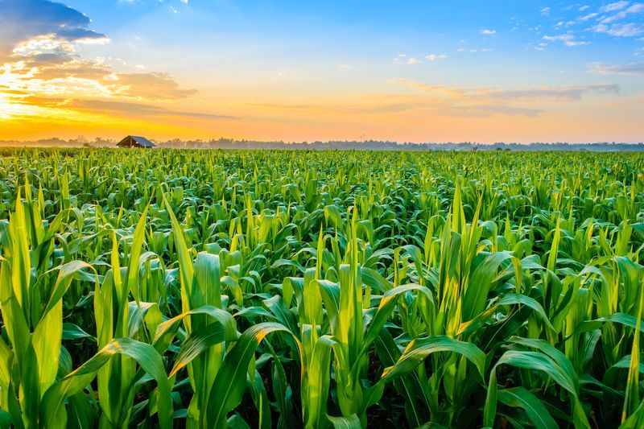

Agriculture: पिकांचे उत्पादन वाढवण्याचे ७ मार्ग
भारत हा शेतीप्रधान (Agriculture) देश आहे. शेतकऱ्यासाठी तसेच देशासाठीही
शेतीचे वार्षिक उत्पादन हा महत्वाचा मुद्दा आहे. बहुतांश शेतकऱ्यांसाठी तर
शेती हे एकच उपजीविकेचे एकमेव साधन आहे.
पिकांचे उत्पादन वाढवण्याचे ७ मार्ग :
-
१. पेरणी करण्यापूर्वी बीज तयार करा:
पिकाला अंकुर येण्यासाठी पेरणीपूर्वी बीज तयार करणे आवश्यक आहे. उदा.
भूईमुगाच्या रोपणासाठी बीज तयार करण्यापूर्वी थियामेथोक्सम ३० एफएस
(शाइनस्टार प्लस) ची फवारणी करण्याचा सल्ला दिला जातो. जेणेकरून
बियाणांना संरक्षण मिळेल. यामुळे रोपटे मजबूत होऊन मातीतून अधिक चांगले
पोषक घटक शोषण्यास मदत मिळते. अशा उत्पादनांचा वापर करून, एक उच्च
दर्जाचे पिक घेता येणे शक्य आहे.
-
२. सूक्ष्म पोषक घटकांचा संतुलित आहार:
पिकांना पोषण मिळावे यासाठी डीएपीचा वापर करताना आपण कमी प्रमाणात आवश्यक
असलेल्या घटकांनाही विचारात घेतले पाहिजे. चांगले पिक घेण्यासाठी हे खूप
महत्त्वाचे आहे. . या सूक्ष्म पोषक घटकांमध्ये प्रामुख्याने झिंक, बोरॉन
इत्यादींचा समावेश असतो, जे मातीचा पोत वाढवतात. आवश्यक सूक्ष्म पोषक
घटकांसह, इतरही आवश्यक घटकांचा विचार केला पाहिजे. संशोधनानुसार, झिंक
३३%च्या तुलनेत झिंक १२% (अमृत झिंक) हे एक हाय-ग्रेड उत्पादन आहे. कारण
याची डीएपीप्रमाणे इतर उत्पादनांसोबत प्रक्रिया होत नाही. तसेच अमृत
झिंकची खूप कमी प्रमाणात आवश्यकता असते. जे झिंक ३३% च्या तुलनेत खूप
वेगाने शोषले जाते. त्यामुळे योग्य उत्पादन आणि योग्य पोषणाचा वापर केला
गेला पाहिजे. रोपट्यांमध्ये पोषक घटकांची कमतरता असल्याची अनेक लक्षणेही
दिसतात. उदा. पाने पिवळी पडणे, करडे डाग/ सुरकुत्या येणे इत्यादी. या
लक्षणांची माहिती घेणे आणि रोपट्यांतील उणीवा लक्षात घेऊन योग्य वेळी
आवश्यक प्रमाणात पोषक घटक पुरवणे आवश्यक आहे.
-
३. मजबूत मूळे ही उत्तम पिकांचा आधार:
जिबरेलिक ॲसिडमुळे पिकांची मुळे पोषक घटकांना उत्तम प्रकारे शोषून घेऊ
शकतात यामुळे पिकांची ताकद वाढते. ही हाय-ग्रेड उत्पादने असून बिजाचे
वेगाने अंकुरण होऊन पिकांमध्ये रुपांतरीत होतात. यामुळे पिकांवर रोगराई
कमी प्रमाणात पसरते. फुलांची संख्या वाढवण्यासही यामुळे मदत मिळते,
परिणामी उत्पादनाचे प्रमाण वाढते. पिकाच्या विकासातील प्रारंभिक
टप्प्यांदरम्यान पिकांच्या उत्पादनात वाढ करणे शक्य आहे, याचा विचार
सर्वप्रथम झाला पाहिजे. त्यानंतरच्या टप्प्यांत पिकांचे उत्पादन सुधारणे
आणि वाढवणे शक्य नाही. आपण प्रमाणित जिबरेलिक ॲसिडयुक्त उत्पादनांचा वापर
करू शकतो. उदा. ग्रेट एक्स्पर्ट बाय सेफेक्स, जे पिकांचे उत्पादन
वाढवण्यासाठी अद्भूत काम करू शकते.
-
४. कीटकव्यवस्थापन:
महामारी आणि कीटकांचे हल्ले नियंत्रित करायचे असतील तर, नेहमी कीड
आढळणाऱ्या जागांचे निरीक्षण करावे. या टप्प्यांमध्ये सतर्कता असणे खूप
आवश्यक आहे. प्रमुख भारतीय कृषी-रासायनिक उद्योग- सेफेक्सच्या वेबसाइटवर
याविषयीची सर्व माहिती उपलब्ध आहे. दर्जेदार उत्पादन म्हणजे तज्ज्ञांनी
शिफारस केलेल्या प्रमाणातच घेणे आवश्यक आहे. समाधानकारक उत्पादन
घेण्यासाठी अखेरच्या शब्दापर्यंत निर्देशांचे पालन करणे महत्त्वाचे आहे.
Prevention is better than cure (प्रतिबंध हाच खरा उपाय) शतकांपासून चालत
आलेली ही म्हण शेतीबाबतही तंतोतंत लागू पडते.
-
५. तज्ज्ञांचा सल्ला घेणे:
आपल्याला काही शंका असल्यास, शेती क्षेत्रातील प्रमाणित तज्ज्ञांशी चर्चा
करणे सर्वात चांगले, ते आपल्या शंका दूर करण्यात मदत करू शकतात. हे
तज्ज्ञ शेतीसंबंधीत तुमच्या शंकेच्या समाधानासोबतच इतरही अनेक
मुद्द्यांवर महत्त्वपूर्ण सल्ला देऊ शकतात. उदा. रोपट्याचा रहस्यमय आजार
किंवा पिकांवरील अज्ञात कीड, जी आपल्या संपूर्ण शेताला धोक्यात आणू शकते.
जे या क्षेत्राशी संबंधित सर्व समस्यांतील जाणकार आहेत अशा तज्ज्ञांचा
सल्ला घेणे कधीही चांगलं. अशावेळी मदत आणि मार्गदर्शनासाठी सेफेक्स
सारख्या कंपन्यांच्या हेल्पलाइनशी देखील संपर्क करू शकता. तज्ज्ञांच्या
मदतीने शेतीसंबंधी प्रत्येक अडचणींतून मार्ग काढता येतील .
-
६. आळी-पाळीने पिक घेणे महत्त्वाचे:
पिकांच्या चक्राला खूप महत्त्व आहे. यामुळे माती पुन्हा नव्याने तयार
होते. पिकांमध्ये बदल केल्यास सतत एकच पिक घेतल्याने मातीवर येणारा
अतिरिक्त ताण दूर करून तिला नव्याने तयार होण्यास मदत मिळते. याबरोबर एक
गोष्ट लक्षात ठेवणे आवश्यक आहे की, काही पिके मातीतील पोषक घटक शोषत
करतात तर काही पिके ते घटक मातीला प्रदान करतात. विविध पिकांच्या
शेतीसाठी आवश्यक घटकांद्वारे भरपूर सुपीक माती तयार करण्यासाठी दोन्ही
बाजूंचे संतुलन करणे आवश्यक आहे. मातीला योग्य प्रमाणात पोषण देण्यासाठी
ही पद्धत उपयुक्त ठरू शकते. परिणामी पिक उत्पादनाचा दर्जाही सुधारतो.
-
७. कार्यक्षमता वाढवणारे घटक:
औषधांची फवारणी पानांच्या काही भागावरच होते. शेतीतज्ज्ञ, शेतकऱ्यांना
स्प्रेची कार्यक्षमता वाढवण्यासाठी वेलवेटसारख्या ओल्या आणि सर्वोत्कृष्ट
उत्पादानाचा वापर करण्याचा सल्ला देतात. समान प्रमाणात औषध संपूर्ण
पानावर पसरण्यासाठी याचा उपयोग होतो. अशा प्रकारच्या उत्पादनाचा वापर
केल्याने पाण्याच्या पृष्ठभागावरील ताण कमी होऊ शकतो आणि याचा प्रसार दर
१० पटींनी वाढू शकतो. पानांच्या बाह्य पृष्ठभागावर सततच्या औषधांच्या
थरामुळे पिकाला विविध प्रकारच्या कीटकांपासून संरक्षण मिळते. यामुळे
शेतकऱ्यांना कमी प्रयत्न आणि कमी खर्चात प्रभावी उत्पादन मिळवता येते.